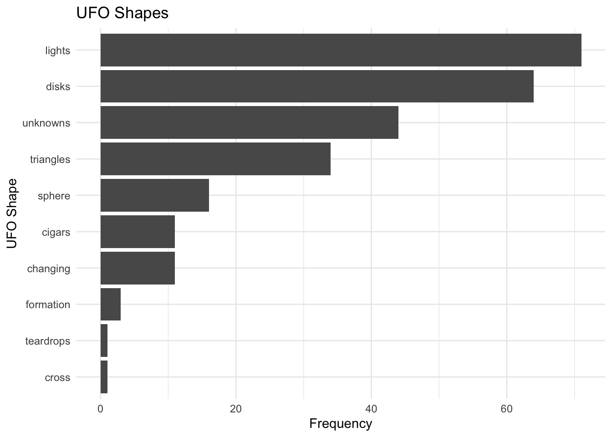
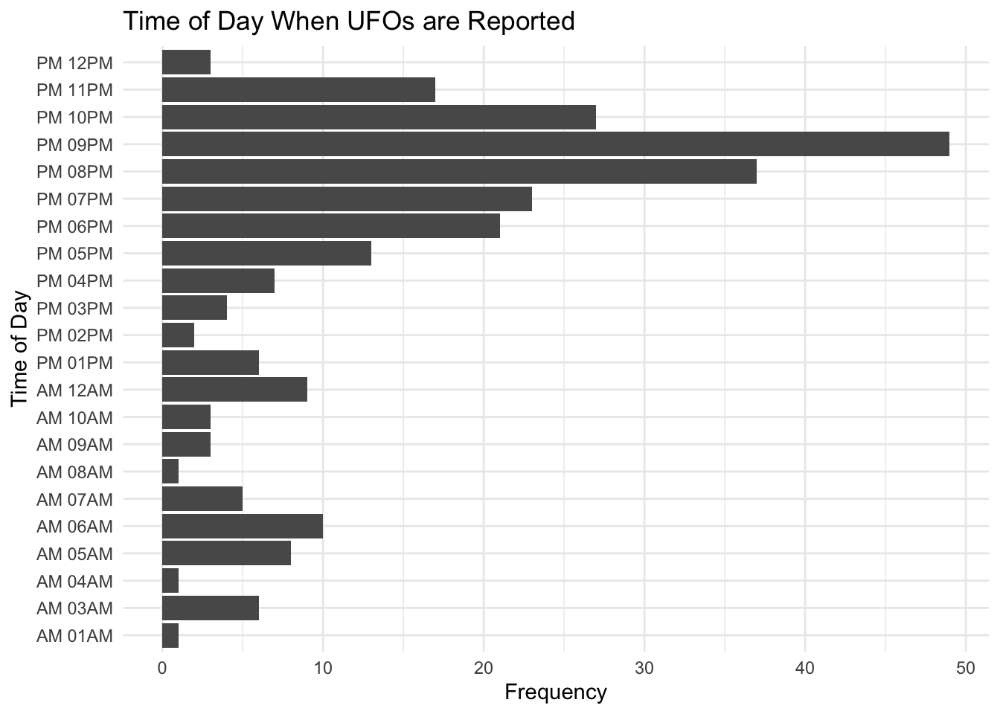
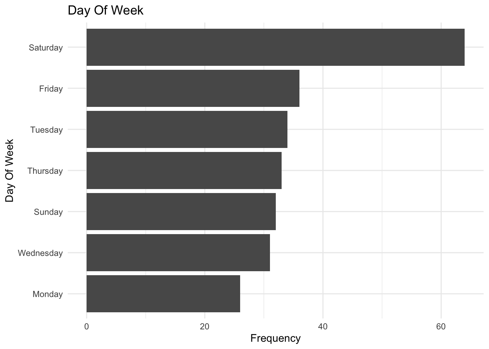
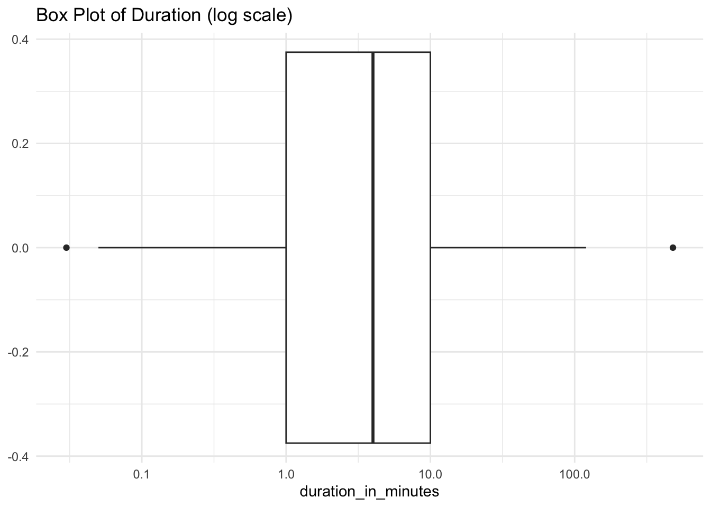

Bucks County UFO Reports
Summary
This is a study of all the UFO cases reported to NUFORC near Doylestown located in Bucks County, PA. This dataset contains 256 cases gathered over the past ten years.
Most reports can be categorized as strange lights in the sky that people seen in the early evening while it’s dark but before bedtime. Sightings last for a few minutes in most cases. The reports reflect excitement and adrenaline with emotions such as anticipation and fear being detected in the text descriptions appearing in the dataset. We also see a large amount of trust in the sentiment analysis done on this but it’s less clear where that might be coming from.
The findings that I am seeing for the Bucks County set of UFO cases reflects what I’ve seen while analyzing the dataset as a whole. Bucks is essentially a microcosm of the national UFO picture. What I am doing now is reading through each case to get an in depth sense of how people are experiencing the phenomenon here in Bucks County.
UFO Shapes
Reported UFO shapes were put into bins since many of the listed descriptions are very similar. For instance, circles, ovals, and all disks are counted as disks. The original reported shapes are retained in the dataset and these can be seem while viewing the case dashboard.

Most reports were lights, disks, or simply unknown. The majority of the case reports can be categorized as “Strange Lights in the Sky” even when they are marked off as disks or unknown.
Time of Day
After shapes, the next most defining part of a UFO report is the time of day the event occurred.

As you may have guessed, most of the reports are in the evening while it’s dark but before most people have fallen asleep. However, there are daytime reports as well.
Day of Week
What days of the week are people seeing UFOs?

Saturday is the most busy day but reports happen throughout the week. It’s mostly likely simply that more people are outside at night on the weekends and so will be more likely to report odd lights in the sky then.
I’ve looked at other date considerations in the past such as day of year and season but I didn’t find much of use in those analysis other than there are slightly more sightings in the summer and the most sightings are on July 4th. This is clearly due to people being out more in summer and the fourth of July also has lots of fireworks.
Duration
How long do UFO events take to unfold? We know from other analysis that the majority of sightings last between 1 and 5 minutes with many lasting only seconds. What did we see in the Bucks County UFO dataset?

This box plot is essentially showing that we have a few extreme outliers of sightings that lasted about 480 minutes. Most sightings appear to be between 1 and 10 minutes and tend to be in the lower end of the distribution.
I used a logarithmic scale in the plot above because it was impossible to read otherwise. But, this plot does a good job of showing the spread of duration.
Sentiment Analysis
How do people feel about their UFO sightings? To start to understand this, I did an analysis with a dataset that contains a list of words and their associated emotional tones. This was applied to the description field in our UFO dataset. For each sighting we have eight categories of emotions and each word that matched the emotional tone dataset was assigned to one of these eight categories. Then I calculated percentages based on the words in which we could assign emotional tones to.
Below is a summary of these assignments that we can use to paint a picture of the emotional tone of sightings.
# A tibble: 8 × 2
column value
<chr> <dbl>
1 trust 23.9
2 anticipation 21.2
3 fear 17.6
4 sadness 11.0
5 joy 10.4
6 surprise 7.73
7 anger 5.25
8 disgust 2.99Trust, anticipation, and fear are the dominate emotions based on this analysis. This finding also reflects what I’ve found in the larger dataset. It would be interesting to try to get to why these are the emotions that seem to pop up. It could be that “trust” is being picked up because these reports are also mentioning things like law enforcement or some other authority.
Many of the reports include things like explosions or fireballs that would be associated with fear and anticipation along with fear makes me think of the adrenaline that some of these reporters are experiencing.